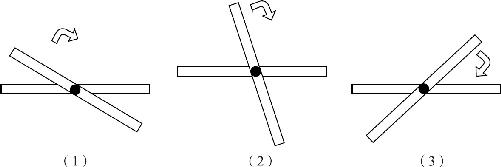

根据我们的直觉，两个针锋相对的对顶角，它们的大小应该是相等的，但是为什么这两个角会相等呢？有人说，这很简单，我们有几何学的第一公理，只要把这两个角度折过来相互覆盖一下不就知道了吗？我们还可以用剪刀把一个角剪下来，和另一个角拼合在一起，如果这两个角相互覆盖，就是相等的呀！没错，你提出的这种方法确实能证明这两个角是相等的．但我要让你证明的是：世界上所有的对顶角都是相等的．这又该怎么证明呢？
瞧见没有，有意思的事儿来了，我们可以肯定的是，无论你在纸上画出多少个对顶角来，你都可以通过测量或者通过剪切的方式证明它们是相等的．但问题是，世界上有无数对的对顶角，你要经过多少次的验证，才能证明世界上所有的对顶角都是相等的呢？凡是直角都相等，这已经是一个无须证明的公设了．那么，对顶角相等也是一个无须证明的公理吗？因为，对顶角相等看起来也是简单直白的．而且我们还可以通过图4－3物理模拟的方法来体验一下对顶角的变化：

图4－3
我们在两根棍子中间钉上个钉子，用这个活动的十字架来模拟一下两条直线相交的效果．做好了以后，我们可以按住一根棍子不动，慢慢转动另一根棍子，于是我们就会发现，这两根棍子之间的两对对顶角要么一起增大，要么一起减小．开始转动时，两根棍子是重合的，我们也可以认为两根棍子的夹角是0度；当两根棍子慢慢转动到垂直的时候呢，角度都变成了90度；然后我们继续转动，等两根棍子再次重合的时候，我们又可以认为角度变成了180度．可见，无论角度具体是多少，反正这对顶着的两个角，就应该是相等的．那么，我们是否可以因此判定世界上所有对顶角都相等呢？不能！为什么呀？因为，刚才通过两根棍子模拟两直线相交的时候，没有使用任何的公理和公设．这个效果模拟得再好，也只能作为一个类比，而不是一个严谨的逻辑证明．要想证明世界上所有的对顶角相等，只能从原来的几条公理中把它推导出来．那么，对顶角相等又该怎么证明呢？
如图4－2所示，在AB 、CD 相交形成的X形中，上下两个角∠1和∠3，是一对对顶角；左右两个角∠2和∠4，也是一对对顶角．要想证明对顶角相等，就必须找到支撑这个结论的已知条件和已有的公理定理．那我们就得好好看一看，在这个两直线相交形成的X形上，还有哪些条件与此问题有关，同时再认真想一想，我们已经学过的那些公理之中，有没有哪个公理是和对顶角有关系的．现在我们就来寻找一下相关的条件．
因为对顶角相等是我们要证明的结论，所以在找寻已知条件的时候我们就要先从其他角度找起，因为我们现在并不知道对顶角是什么关系，所以上下的∠1和∠3就先不看了，我们看看上边的∠1和左边的∠4是什么关系？显然，它们是一对邻补角．因为它们相当于直线CD 被直线AB 切分开了，所以∠1和∠4相加肯定等于一个平角．我们接着再往下看，下边的∠3和左边的∠4是什么关系呢？也是一对邻补角，∠3和∠4拼合起来以后，就是从左上到右下的直线AB ，因此∠3和∠4相加也等于一个平角．现在就有意思了，左边的∠4和上、下两个角都有关系，它和上边的∠1是邻补角，相加等于一个平角，和下边的∠3相加也是一个平角．∠4分别加上∠3和∠1以后，都等于平角，那是不是说明∠3和∠1是相等的呢？不对！因为公理里头没有这么一条．公理里头说的是等量加等量和相等，并没有说如果等量加上不同的两个东西以后相等，这两个东西也就相等．那怎么办？我们可以把等式变个形，左边∠4加上边的∠1等于平角，是不是也可以写成∠1＝平角－∠4呢？同理，左边的∠4加下边的∠3等于平角，也可以写作∠3＝平角－∠4，∠1和∠3都等于平角减∠4，这符合哪条公理呢？等量减等量差相等．于是我们就知道了，上下两个角一定是相等的．对顶角相等被证明了吗？没有，以上只是我们的思路，接下来，我们就写出第一个严格的证明过程：
∵∠1＋∠4＝∠COD ＝180°，
∴∠1＝180°－∠4．
∵∠3＋∠4＝∠AOB ＝180°，
∴∠3＝180°－∠4．
又∵∠1＝180°－∠4（已证），
∴∠1＝∠3．
以上就是一个几何定理的完整的证明过程．在这个过程中，我们所有的根据都是来源于基本的公理，推理过程的先后顺序也是严密的、无懈可击的．你别看这个过程很简单，这可是数学家泰勒斯在公元前7世纪才证明了的．在此之前，没有任何人知道为什么对顶角是相等的．通过这个严谨的证明过程，我们可以感受到古希腊数学家那种一丝不苟的精神．以后我们在做证明题的时候，也要时刻提醒自己，每一步的根据是什么，不能无中生有地编造一个定理，也不能在证明过程中跳过几个步骤，即使这些步骤是显而易见的，也必须一条一条地给出详细说明．
这时候，也可能会有人提出质疑，人家让你证明世界上所有的对顶角相等，你不也只是证明了纸上画的一对对顶角吗？证明过程的精妙就在这里了，虽然我在纸上只是画了一个图，但是因为我没有说自己画的角的大小是多少，因此，我所证明的不仅是我画的这一张图，这一对角．在图中我们用到的所有条件，都是世界上任何一组对顶角拥有的基本条件，因此虽然我证明的是一对对顶角相等，但它们可以代表世界上所有的对顶角都相等．这就是没有数字的数学，这就是我们在不知道角度是多少的条件下，仍然可以知道两个角是相等的．如果我们不用这种逻辑证明，而采用量角器测量或者采用覆盖法验证，那就只能验证某两个具体的角是相等的，而无法证明世界上所有的对顶角都相等．
可能也有人会说，对顶角相等这么明白的事实，即使不用证明，我们心里也是清楚的．还真不是这样．要知道，从最基本的公理出发，仅仅是定理就400多个，从这400多个定理再次出发，间接证明的现象何止几千几万，而要想让那些看起来不是很直观的定理得到证明，就必须在这些看起来很明白的定理上下足功夫．这叫不积跬步，无以至千里．